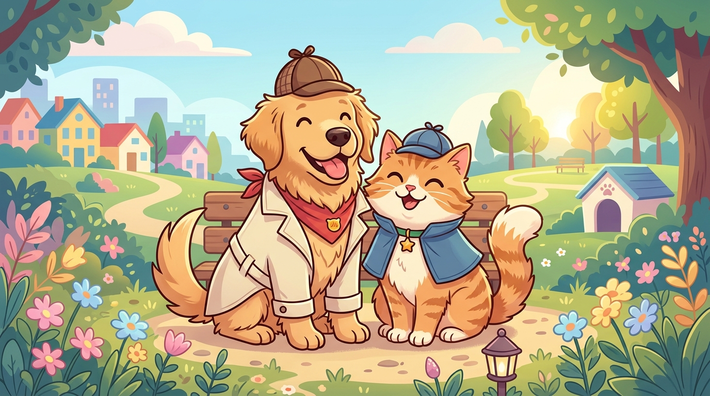

Conectamos a vecinos, familias, veterinarias y refugios en tiempo real con mapa interactivo GPS, chapitas QR inteligentes para collar, afiches PDF automáticos y búsqueda con Inteligencia Artificial.

Herramientas diseñadas especialmente para actuar rápido cuando una mascota se pierde o cuando encontrás una en la calle.
Visualizá mascotas perdidas y encontradas en tu zona (1, 3, 4, 10 km o toda tu ciudad). Por seguridad, la ubicación exacta se protege mostrando un radio aproximado de 1 a 2 cuadras.
Creá el perfil digital de tu mascota y descargá gratis su chapita con código QR lista para imprimir. Quien la escanee en la calle verá su ficha de emergencia y podrá contactarte al instante.
Generá con un solo toque un cartel A4 de "¡SE BUSCA!" o "¡MASCOTA ENCONTRADA!" listo para imprimir y pegar en el barrio, o formato vertical para compartir en redes sociales.
Describí cómo es la mascota o usá el comparador visual con IA (Google Gemini) para encontrar coincidencias rápidas entre los reportes activos de tu ciudad.
Comunicate de forma directa y segura dentro de la app entre quien reportó y el dueño, con notificaciones push instantáneas y sin exponer tu teléfono personal públicamente.
Explorá los casos cercanos con Acceso Libre sin registro obligatorio, e iniciá sesión con Google o correo verificado cuando necesites publicar un reporte o enviar mensajes.
En menos de 2 minutos podés activar la búsqueda en tu barrio o ayudar a un animalito encontrado.
Entrá en Modo Libre para ver mascotas cercanas o publicá un reporte en 5 pasos simples subiendo foto, especie, color, señales particulares y barrio.
Tu aviso aparece al instante en el mapa de vecinos cercanos. Descargá el afiche PDF con código QR para imprimirlo o compartirlo por WhatsApp e Instagram.
Recibí mensajes en tiempo real cuando alguien vea a tu mascota. Una vez en casa, marcá el caso como "¡Reencontrado!" para celebrar con la comunidad.
Cada vecino que se suma en tu ciudad multiplica las posibilidades de que un perrito, gatito u otra mascota perdida vuelva sana y salva con su familia.
Respuestas rápidas sobre el funcionamiento, privacidad y seguridad de FindMyPet.
No. Podés ingresar tocando "Entrar en Acceso Libre" para explorar el listado de mascotas cercanas. Solo te pediremos iniciar sesión y verificar tu cuenta si querés publicar un reporte o chatear con otro usuario.
Por privacidad y seguridad de los usuarios, FindMyPet nunca expone la dirección exacta de un domicilio particular, sino una zona aproximada de 1 a 2 cuadras alrededor del punto reportado.
Desde la sección Mi Cuenta / Mis Mascotas podés registrar a tu mascota y generar su chapita con código QR. Si tu mascota se extravía y alguien escanea el QR con la cámara de su celular, se abrirá una página web de emergencia con sus datos y botón de contacto directo.
Podés eliminar tu cuenta y todos tus datos de manera inmediata desde la propia aplicación entrando en Mi Cuenta > Eliminar cuenta definitivamente, o solicitándolo por correo a soporte.findmypet@gmail.com.